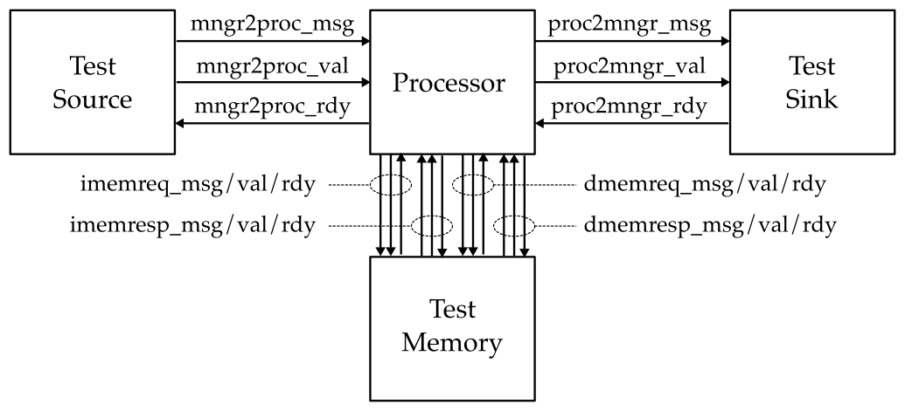
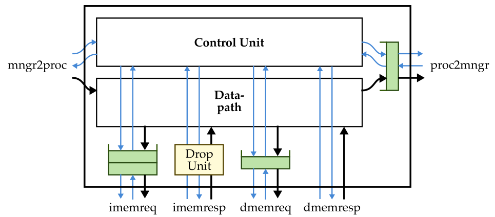
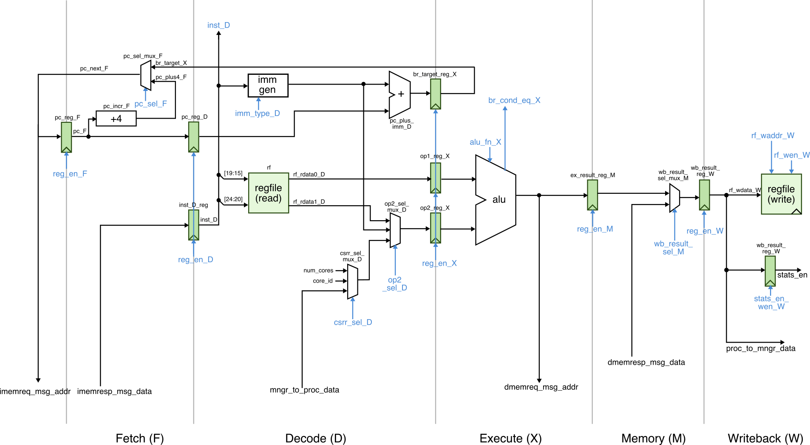

# ECE 4750 Section 3: Lab 2 Head Start
Table of Contents
- TinyRV2 Processor Walk-Through
- Testing the ADD Instruction
- Implementing and Testing the ADDI Instruction
- Evaluating an Accumulate Function
This discussion section serves to introduce students to the
basic processor modeling approach and testing strategy we will be
using to implement a pipelined TinyRV2 processor in lab 2. You
should log into the ecelinux servers using the remote
access option of your choice and then source the setup script.
% source setup-ece4750.sh
% cd $HOME/ece4750/2025F
% git pull
% cd sections/section3
% TOPDIR=$PWD
% mkdir $TOPDIR/buildTinyRV2 Processor Walk-Through
The following figure shows the high-level interface for our TinyRV2 processor. The procesor has an independent instruction memory and data memory interface along with a mngr2proc and proc2mngr stream interface for testing purposes. All interfaces are implemented using the latency-insensitive val/rdy micro-protocol.

We provide students a complete functional-level model of a
processor that implements the above interface and can be used as a
reference. You can find the FL model in
lab2_proc/ProcFL.py. This is what the interface looks
like in Verilog for an RTL implementation of the TinyRV2
process.
module lab2_proc_ProcSimple
#(
parameter p_num_cores = 1
)
(
input logic clk,
input logic reset,
// From mngr streaming port
input logic [31:0] mngr2proc_msg,
input logic mngr2proc_val,
output logic mngr2proc_rdy,
// To mngr streaming port
output logic [31:0] proc2mngr_msg,
output logic proc2mngr_val,
input logic proc2mngr_rdy,
// Instruction Memory Request Port
output mem_req_4B_t imem_reqstream_msg,
output logic imem_reqstream_val,
input logic imem_reqstream_rdy,
// Instruction Memory Response Port
input mem_resp_4B_t imem_respstream_msg,
input logic imem_respstream_val,
output logic imem_respstream_rdy,
// Data Memory Request Port
output mem_req_4B_t dmem_reqstream_msg,
output logic dmem_reqstream_val,
input logic dmem_reqstream_rdy,
// Data Memory Response Port
input mem_resp_4B_t dmem_respstream_msg,
input logic dmem_respstream_val,
output logic dmem_respstream_rdy,
// extra ports
input logic [31:0] core_id,
output logic commit_inst,
output logic stats_en
);Notice there are some extra ports to set the core id and for statistics, and that we are using SystemVerilog structs to encode the memory requests and responses. Here is the memory request struct format:
76 74 73 66 65 34 33 32 31 0
+------+---------------+------------------+------+------------------+
| type | opaque | addr | len | data |
+------+---------------+------------------+------+------------------+And here is the memory response struct format:
46 44 43 36 35 34 33 32 31 0
+------+---------------+------+------+------------------+
| type | opaque | test | len | data |
+------+---------------+------+------+------------------+The full TinyRV2 instruction set includes the following instructions:
- CSR:
csrr, csrw - Reg-Reg:
add, sub, mul, and, or, xor, slt, sltu, sra, srl, sll - Reg-Imm:
addi, ori, andi, xori, slti, sltiu, srai, srli, slli, lui, auipc - Memory:
lw, sw - Jump:
jal, jalr - Branch:
bne, beq, blt, bltu, bge, bgeu
In this discussion section, we provide you a simple processor implementation that implements ADD, LW, BNE, CSRR, and CSRW. The block diagram for how the control unit and datapath unit are composed is shown below.

The datapath for this simple processor is shown below.

Take a look at the code in the following files to learn more about how the simple processor is implemented.
lab2_proc/ProcSimpleDpath.vlab2_proc/ProcSimpleCtrl.vlab2_proc/ProcSimple.v
Testing the ADD Instruction
Let’s take a look at a basic test for the ADD instruction. They
primary way we will test our processors is by writing very small
assembly test programs. Take a look at the test in
lab2_proc/test/simple_add_test.py to see how to write
such assembly test programs.
def test_add_sm( cmdline_opts ):
prog="""
csrr x1, mngr2proc < 5
csrr x2, mngr2proc < 4
nop
nop
nop
nop
nop
nop
nop
nop
add x3, x1, x2
nop
nop
nop
nop
nop
nop
nop
nop
csrw proc2mngr, x3 > 9
nop
nop
nop
nop
nop
nop
nop
nop
"""
run_test( ProcSimple, prog, cmdline_opts=cmdline_opts )Our assembly test program is just a multiline string with one
assembly instruction per line, which we can then pass in to the
run_test helper function. There are two special
control status registers (CSR) that we will use extensively in
testing. If we read the mngr2proc CSR using a CSRR
instruction, then this deques a message from the
mngr2proc stream interface (the message comes from
the stream source) and writes it to the given general purpose
register. If we write the mngr2proc CSR using a CSRW
instruction, then this enqueues a message onto the
proc2mngr stream interface (the message goes to the
stream sink). We can use the < symbol to specify
in the assembly code what value we want the stream source to send
to the processor for that instruction, and we can use the
> symbol to specify in the assembly code what
value we want the stream sink to check for that instruction.
You should always make sure your tests pass on the FL model before using them to test your RTL model. Let’s run the above test on our FL model.
% cd $TOPDIR/build
% pytest ../lab2_proc/test/simple_add_test.py -sUse the -s command line option so you can see the
linetrace. Verify that the instructions you think should be
executing are indeed executing on the FL model. Now let’s try the
same test on the simple processor. Modify run_test to
use the ProcSimple like this:
run_test( ProcSimple, prog, cmdline_opts=cmdline_opts )
Then rerun the test and look at the line trace. It should look something like this:
1r . > | | | | |[ ] > [ ]| >
2r . > | | | | |[ ] > [ ]| >
3: . > | | | | |[ ]rd:00:00000200:0: > [ ]| >
4: # > 00000200| | | | |[ ]rd:00:00000204:0: >rd:00:0:0:fc0020f3[ *]| >
5: 00000005 > 00000204|csrr x01, mngr2proc | | | |[ ]rd:00:00000208:0: >rd:00:0:0:fc002173[ *]| >
6: 00000004 > 00000208|csrr x02, mngr2proc |csrr| | |[ ]rd:00:0000020c:0: >rd:00:0:0:00000013[ *]| >
7: . > 0000020c|nop |csrr|csrr| |[ ]rd:00:00000210:0: >rd:00:0:0:00000013[ *]| >
8: . > 00000210|nop |nop |csrr|csrr|[ ]rd:00:00000214:0: >rd:00:0:0:00000013[ *]| >
9: . > 00000214|nop |nop |nop |csrr|[ ]rd:00:00000218:0: >rd:00:0:0:00000013[ *]| >
10: . > 00000218|nop |nop |nop |nop |[ ]rd:00:0000021c:0: >rd:00:0:0:00000013[ *]| >
11: . > 0000021c|nop |nop |nop |nop |[ ]rd:00:00000220:0: >rd:00:0:0:00000013[ *]| >
12: . > 00000220|nop |nop |nop |nop |[ ]rd:00:00000224:0: >rd:00:0:0:00000013[ *]| >
13: . > 00000224|nop |nop |nop |nop |[ ]rd:00:00000228:0: >rd:00:0:0:00000013[ *]| >
14: . > 00000228|nop |nop |nop |nop |[ ]rd:00:0000022c:0: >rd:00:0:0:002081b3[ *]| >
15: . > 0000022c|add x03, x01, x02 |nop |nop |nop |[ ]rd:00:00000230:0: >rd:00:0:0:00000013[ *]| >
16: . > 00000230|nop |add |nop |nop |[ ]rd:00:00000234:0: >rd:00:0:0:00000013[ *]| >
17: . > 00000234|nop |nop |add |nop |[ ]rd:00:00000238:0: >rd:00:0:0:00000013[ *]| >
18: . > 00000238|nop |nop |nop |add |[ ]rd:00:0000023c:0: >rd:00:0:0:00000013[ *]| >
19: . > 0000023c|nop |nop |nop |nop |[ ]rd:00:00000240:0: >rd:00:0:0:00000013[ *]| >
20: . > 00000240|nop |nop |nop |nop |[ ]rd:00:00000244:0: >rd:00:0:0:00000013[ *]| >
21: . > 00000244|nop |nop |nop |nop |[ ]rd:00:00000248:0: >rd:00:0:0:00000013[ *]| >
22: . > 00000248|nop |nop |nop |nop |[ ]rd:00:0000024c:0: >rd:00:0:0:00000013[ *]| >
23: . > 0000024c|nop |nop |nop |nop |[ ]rd:00:00000250:0: >rd:00:0:0:7c019073[ *]| >
24: . > 00000250|csrw proc2mngr, x03 |nop |nop |nop |[ ]rd:00:00000254:0: >rd:00:0:0:00000013[ *]| >
25: . > 00000254|nop |csrw|nop |nop |[ ]rd:00:00000258:0: >rd:00:0:0:00000013[ *]| >
26: . > 00000258|nop |nop |csrw|nop |[ ]rd:00:0000025c:0: >rd:00:0:0:00000013[ *]| >
27: . > 0000025c|nop |nop |nop |csrw|[ ]rd:00:00000260:0: >rd:00:0:0:00000013[ *]| > 00000009
28: . > 00000260|nop |nop |nop |nop |[ ]rd:00:00000264:0: >rd:00:0:0:00000013[ *]| >
29: . > 00000264|nop |nop |nop |nop |[ ]rd:00:00000268:0: >rd:00:0:0:00000013[ *]| >
30: . > 00000268|nop |nop |nop |nop |[ ]rd:00:0000026c:0: >rd:00:0:0:00000013[ *]| >
31: . > 0000026c|nop |nop |nop |nop |[ ]rd:00:00000270:0: >rd:00:0:0:00000013[ *]| >
32: . > 00000270|nop |nop |nop |nop |[ ]rd:00:00000274:0: >rd:00:0:0:fc0020f3[ *]| >Now add a new test function to
lab2_proc/test/simple_add_test.py named
test_add_lg which is similar to
test_add_sm but uses two larger input values. Verify
your test passes on both ProcFL and
ProcSimple.
Implementing and Testing the ADDI Instruction
Now let’s add the ADDI instruction to our simple processor. It is critical to always take an incremental approach. Add a single instruction to your processor. Do lots of testing and only once you are confident you have covered all of the corner cases should you move on to adding another instruction.
Use the given handout to plan your implementation. Make sure you understand how the control signals are set for the ADD instruction. Draw any modifications you need to the datapath, add any control signals you need to the control signal table, and then fill out the row in the control signal table for the ADDI instruction. Here are the explanations of each control signal:
val: whether or not the instruction is valid; should beyfor all instructions; basically a way to determine if this is a valid instruction or not for debugging purposesbr type: is eitherbr_naif this is not a branch orbr_bneif this is a BNE operationimm type: immediate format corresponding to the TinyRV2 instruction set manual.imm_iis for I-type immediate format andimm_bis for B-type immediate formatrs1 en: set tonif this instruction does not use thers1field and set toyif this instruction does use thers1field; used for dependency checkingop2 muxsel: mux select control signal for the op2 mux; usebm_rfto choose the value from the register file, usebm_immto choose the value from the immediate generation unit, usecsrto choose the value from the CSR muxrs2 en: set tonif this instruction does not use thers2field and set toyif this instruction does use thers2field; used for dependency checkingalu fn: ALU function control signal; usealu_addfor the ALU to do an add; usealu_cp0for the ALU to copy op0 to the output; usealu_cp1for the ALU to copy op1 to the outputdmm type: the type of data memory operation; usenrif this is not a memory request; useldif this is a loadwbmux sel: mux select control signal for writeback mux; usewm_ato choose the value from the ALU; usewm_mto choose the value from the data memoryrf wen: register file write enable; set tonif this instruction does not need to write the register file; set toyif this instruction does need to write the register filecsrr/csrw: whether this is a CSRR or CSRW instruction
Once you have the control signal table filled out on paper, go
ahead and add a new row to the control signal table in
lab2_proc/ProcSimpleCtrl.v:
always_comb begin
casez ( inst_D )
// br imm rs1 op2 rs2 alu dmm wbmux rf
// val type type en muxsel en fn typ sel wen csrr csrw
`TINYRV2_INST_NOP :cs( y, br_na, imm_x, n, bm_x, n, alu_x, nr, wm_a, n, n, n );
`TINYRV2_INST_ADD :cs( y, br_na, imm_x, y, bm_rf, y, alu_add, nr, wm_a, y, n, n );
`TINYRV2_INST_LW :cs( y, br_na, imm_i, y, bm_imm, n, alu_add, ld, wm_m, y, n, n );
`TINYRV2_INST_BNE :cs( y, br_bne, imm_b, y, bm_rf, y, alu_x, nr, wm_a, n, n, n );
`TINYRV2_INST_CSRR :cs( y, br_na, imm_i, n, bm_csr, n, alu_cp1, nr, wm_a, y, y, n );
`TINYRV2_INST_CSRW :cs( y, br_na, imm_i, y, bm_rf, n, alu_cp0, nr, wm_a, n, n, y );
endcase
endCreate a new test case in
lab2_proc/test/simple_addi_test.py similar in spirit
to the test cases we used to test the ADD instruction. Then run
your test case on both ProcFL and
ProcSimple. Look at the line trace to confirm your
test case is doing what you expect on ProcSimple.
% cd $TOPDIR/build
% pytest ../lab2_proc/test/simple_addi_test.py -vWriting assembly test cases can be very tedious. We can use the
Python to help automate the process of generating test
cases. You can see an example of functions that generate assembly
test programs in inst_add.py and then you can see
using these test programs in ProcSimple_test.py. Go
ahead and run all of the provided tests on ProcFL and
ProcSimple like this:
% cd $TOPDIR/build
% pytest ../lab2_proc/test -vEvaluating an Accumulate Function
Now let’s try to run the assembly for a simple C function on the simple processor and start to look at its performance. Write out the TinyRV2 assembly code that implements this C function:
int accumulate( int* a, int n )
{
int sum = 0;
for ( int i = 0; i < n; i++ ) {
int b = a[i];
sum = sum + b;
}
return sum;
}You should only use the instructions we have implemented in the
simple processor (ADD, ADDI, LW, BNE). Once you have the assembly,
add it to the
lab2_proc/test/simple_accumulate_test.py test script.
Then try running the program on both ProcFL and
ProcSimple like this:
% cd $TOPDIR/build
% pytest ../lab2_proc/test/simple_accumulate_test.py -vTake a look at the line trace to estimate the number of cycles per iteration.